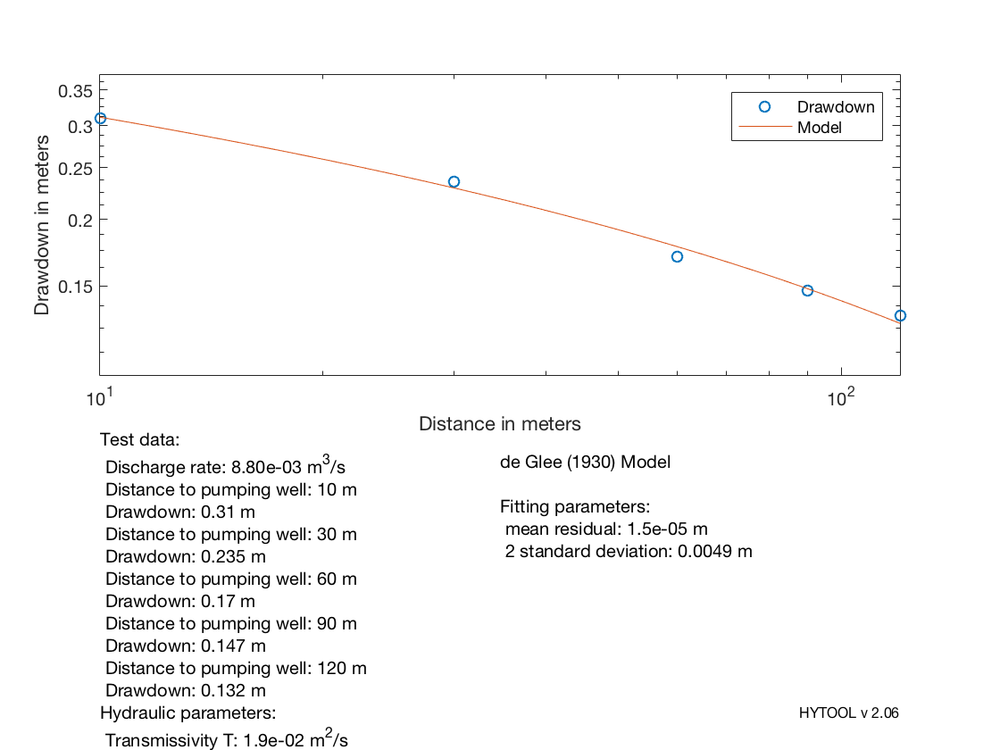

Data set
The data set for this example comes from the following reference: Kruseman & de Ridder (1994), Analysis and Evaluation of Pumping Test Data. International Institute for Land Reclamation and Improvement, Wageningen. The Netherlands. 377 pp. Data set from table 4.1 p77
Contents
General Information: Localisation: Test performed in 'Dalem' site (de Ridder 1961).
The fitted de Glee method requires to know the pumping rate and the drawdown in at least two observation wells located at different distances from the pumping well.
q=0.0088; % well discharge in m3/s
| HYTOOL Demo |
Use of the deg_fit function
We can then use the deg_fit function (Holzbecher) and compute transmissivity & resistence : T = 1.9e-2 m2/s, c = 1.8e7 s
[T,c] = deg_fit (q,r',s')
Iteration Func-count min f(x) Procedure
0 1 0.015997
1 3 0.0107119 initial simplex
2 5 0.00723583 expand
3 7 0.00201204 expand
4 9 0.00118635 reflect
5 10 0.00118635 reflect
6 12 0.00118635 contract inside
7 14 0.00113312 contract inside
8 16 0.00104555 reflect
9 18 0.00103578 contract inside
10 20 0.000982262 reflect
11 22 0.000982262 contract inside
12 24 0.00088682 expand
13 26 0.000815172 expand
14 28 0.000560313 expand
15 30 0.000258322 expand
16 32 0.000258322 contract inside
17 34 0.000258322 contract inside
18 36 0.000177794 reflect
19 38 0.000177794 contract inside
20 40 0.000177794 contract inside
21 42 0.000173307 reflect
22 44 0.000137083 reflect
23 45 0.000137083 reflect
24 46 0.000137083 reflect
25 48 0.000121516 contract inside
26 50 0.000121516 contract inside
27 52 0.000120109 reflect
28 54 0.000119025 contract inside
29 56 0.000118817 contract outside
30 58 0.000118348 contract inside
31 60 0.000118099 contract inside
32 61 0.000118099 reflect
33 63 0.000118045 contract inside
34 65 0.000118045 contract inside
35 67 0.000118014 contract inside
36 69 0.000118014 contract inside
37 71 0.000118011 contract inside
38 73 0.000118007 contract outside
39 75 0.000118006 contract inside
40 77 0.000118005 contract inside
41 79 0.000118005 contract outside
42 81 0.000118004 contract inside
43 83 0.000118004 contract inside
44 84 0.000118004 reflect
45 86 0.000118004 contract inside
46 88 0.000118004 contract outside
47 90 0.000118004 contract inside
48 92 0.000118004 contract inside
49 94 0.000118004 contract inside
50 96 0.000118004 contract outside
51 98 0.000118004 contract inside
52 100 0.000118004 contract outside
53 102 0.000118004 contract inside
54 104 0.000118004 contract inside
55 106 0.000118004 contract outside
56 108 0.000118004 contract inside
57 110 0.000118004 contract inside
58 112 0.000118004 contract inside
59 114 0.000118004 contract inside
60 116 0.000118004 contract inside
61 118 0.000118004 contract inside
62 120 0.000118004 contract outside
63 122 0.000118004 contract inside
64 124 0.000118004 contract outside
65 126 0.000118004 contract inside
66 128 0.000118004 contract inside
67 130 0.000118004 contract inside
68 132 0.000118004 contract inside
69 134 0.000118004 reflect
70 136 0.000118004 contract inside
71 138 0.000118004 contract inside
72 140 0.000118004 contract inside
73 142 0.000118004 contract inside
74 144 0.000118004 contract inside
75 146 0.000118004 reflect
76 148 0.000118004 contract inside
77 152 0.000118004 shrink
78 156 0.000118004 shrink
79 157 0.000118004 reflect
80 161 0.000118004 shrink
81 162 0.000118004 reflect
82 166 0.000118004 shrink
83 167 0.000118004 reflect
84 168 0.000118004 reflect
85 169 0.000118004 reflect
86 171 0.000118004 reflect
87 175 0.000118004 shrink
88 177 0.000118004 contract inside
89 178 0.000118004 reflect
90 180 0.000118004 contract inside
91 184 0.000118004 shrink
92 186 0.000118004 contract outside
93 190 0.000118004 shrink
94 194 0.000118004 shrink
95 198 0.000118004 shrink
96 199 0.000118004 reflect
97 203 0.000118004 shrink
Optimization terminated:
the current x satisfies the termination criteria using OPTIONS.TolX of 1.000000e-04
and F(X) satisfies the convergence criteria using OPTIONS.TolFun of 1.000000e-11
T =
0.0188
c =
1.7528e+07
 The result found by Kruseman & de Ridder was: T = 2.46e-2 m2/s, c = 4.9e7 s